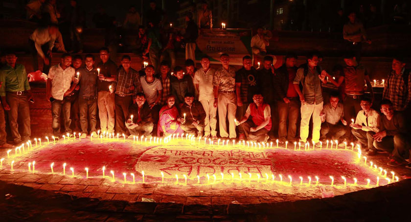
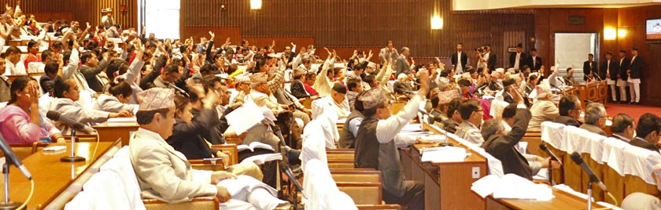

YOU MAY ALSO LIKEUDMF concludes ‘govt not serious for talks, merely orchestrating drama’The United Democratic Madhesi Front (UDMF) has concluded that the government was not serious for tal... Hindu protesters chase Law Minister Acharya away from TundikhelHindu protesters chased Law Minister Narahari Acharya away from Tundikhel when he reached there to a... 2 Nepal Army soldiers killed as truck turns turtle in SirahaTwo soldiers lost their life and 14 others sustained injuries when a speeding Nepal Army turned turt... |
Constituent Assembly endorses Nepal’s Constitution 2072 with two-thirds majority, to promulgate on Sunday KATHMANDU: The Constituent Assembly on Wednesday evening endorsed the Revised Bill on Nepal’s Constitution with an overwhelming two-thirds majority. Now, the Bill will become Nepal’s new charter once the lawmakers sign and the CA Chairperson authenticates it. In the CA meeting, scheduled for 5 pm on Sunday, September 20, President Dr Ram Baran Yadav will announce the promulgation of new constitution through the sovereign body elected by the people.When put to split voting after the endorsement of individual articles and schedules, the entire Revised Bill garnered support from 507, out of 598 lawmakers. As many as 25 CA members, however, cast their vote against the Bill. Altogether 532 members cast their votes ,while 65 others did not take part in the voting process. |
MOST VISITED
|
||
Long wait is over, claim leaders Published: September 16, 2015 9:50 pm On: Kathmandu
CA members vote on draft constitution on Wednesday, September 16. KATHMANDU: After the Constituent Assembly endorsed the constitution draft with an overwhelming two-third majority, top leaders said it was an historical achievement. They commented that a long wait is finallyover. Emerging from the meeting, Prime Minister and Nepali Congress President Sushil Koirala urged members of the general public to organise Deepawali to celebrate commencement of the constitution. “It is the day of excitement,” Koirala briefly told the reporters, “It is the success of everyone that we achieved after 70 years.” CA Chairman Subas Chandra Nembang said the new constitution has given a concrete shape to people’s inspirations and sentiments. “Some formal procedures areyet to be conducted,” the Chairman said, “But, the CA has made the constitution by today.” Meanwhile, Nembang claimed that the new constitution would be the most people-friendly in Nepal’s constitutional history as it was drafted in the widest participation of people. He also urged disgruntled forces to raise their voices within the same constitution and include their concerns in amendments. UCPN-Maoist Chairman Pushpa Kamal Dahal said the dream of Nepali people, which was overdue for last 70 years, has come true. “It is the victory of people’s independence and sacrifice of all martyrs,” the Maoist leader said, adding the constitution is the final achievement of all political movements, including peaceful protests and armed conflicts. |
HOT NEWSReal Madrid says Ramos dislocated left shoulder joint.Young royals to attend world premiere of new James Bond film
|
|||
{kind=link}